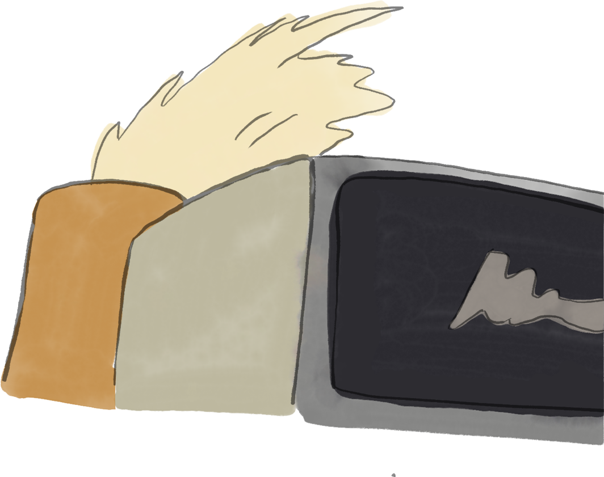

글∙그림 이명재
왜 가끔 그럴 때 있잖아요.
바쁘게 살다보면.
같은 하루가 매일매일 반복되는 느낌일 때.
그럴 때 어느 날 문득 집에 돌아와서
이렇게 자라고 있는 애들을 보면
의미 없게 지나갔다고 생각했던

나의 지난 시간들도 덤으로
뿌듯해지는 기분?
이렇게 작지만, 밭을 일구고 작물을 키운다는 게요.
생각보다 시간이 오래 걸리는 일이잖아요.
근데 그 오래 걸리는 게 좋을 때가 있어요.
FIN
글∙그림 이명재
이 페이지는 웹툰 '위아더좀비'의 47~49화 내용을 기반으로 재구성하였습니다.
다시 보기
네이버 웹툰 '위아더좀비'는 현재 완결임박!
위아더좀비 보러 가기